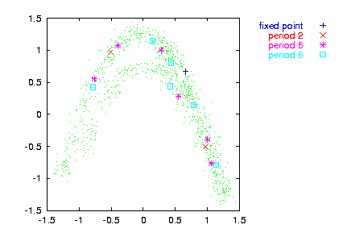

Find unstable period -p orbits and their stabilitiy (the most unstable eigenvalue). The dynamics is approximated using a Gaussian kernel estimator of bandwidth -r | -v, where either -r or -v must be given. The minimum of
-m embedding dimension
-r absolute kernel bandwidth
-v same as fraction of standard deviation
-p period of orbit (1)
-w minimal separation of trial points (e)
-W minimal separation of distinct orbits (e)
-a maximal error of orbit to be plotted (all plotted)
-s initial separation for stability (e)
-n number of trials (all points)
-l number of values to be read (all)
-x number of values to be skipped (0)
-c column to be read (1 or file,#)
-o output file name, just -o means file_upo_pp
-V verbosity level (0 = only fatal errors)
-h show this messageverbosity level (add what you want):
1 = input/output
2 = print orbits found
4 = status after 1000 points
8 = status after 100 points
16 = status after 10 points
p
---
\ / \ 2
| | x - f(x ,...) |
/ \ n+1 n /
---
n=1
is sought by a Levenberg-Marquardt scheme. The first -n embedded points are tried as initial
conditions. False minima can be cut off by limiting -a, the error at the minimum. Very close trial
points can be omitted by giving -w. Orbits
which are less than -W apart are considered
identical.
The stability is computed by iterating forward a small (set by -s ) initial perturbation to the orbit.
Orbits are written to file_upo_pp where pp is the desired period. If an orbit is found to have a sub-period, all results are given with respect to that. Orbits can be plotted in delay coordinates using upoembed.
Note:As you noticed, the UPOs are defined here in a rather loose sense, similarly in spirit to the use by So et al. and other authors. Thus, the mere detection of such an orbit does not constitute evidence for low dimensional dynamics or anything the like.
Note:The period is passed to the program in samples. This is different from what you may expect, since a "period 2" orbit of the Lorenz equations may turn out to have period 137 or whatever. In fact, the program has been written for map like, or Poincaré section data. It is also fair to say that it hasn't been tested extensively.
Note: While the existence and locations of the orbits seems to be quite reliable, the stabilities pose surprising problems. The chief reason is that they use information at a single point in phase space and no averaging over the whole attractor is involved. Values should be fine for comparisons, like in surrogate data testing. If absolute quantities are needed (like in cycle expansions), extra care has to be taken. The user might consider using an alternative approach, for example via the cycle Jacobians as obtained from a locally linear fit.
> henon -l1000 | addnoise -v0.1 > data
> upo -p6 -m2 -v0.1 -n70 data -o
gnuplot> plot '< cat data | embed -d1' notitle w do,
\
'< cat data_upo_06 | upoembed -d1' index 3 title "fixed point", \
'< cat data_upo_06 | upoembed -d1' index 1 title "period 2", \
'< cat data_upo_06 | upoembed -d1' index 0 title "period 6", \
'< cat data_upo_06 | upoembed -d1' index 2 title "period 6"
